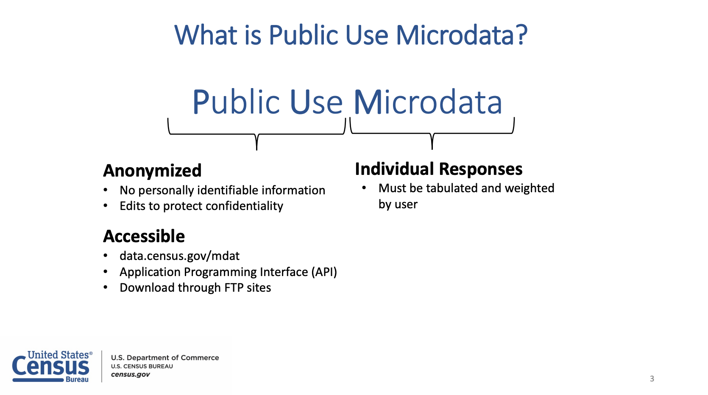

Part 1 – Introduction to the Dataset
- Getting familiar with what the ACS PUMS data is and how it is structured
- Understanding the questions we are going to explore in this tutorial
Presentation of the dataset
What is PUMS?
The Public Use Microdata Sample (PUMS) dataset is a subsample of the American Community Survey (ACS) interviews done on one percent of all US households. It is a detailed collection of information including demographic, housing, and economic characteristics. It is collected by the U.S. Census Bureau as part of the decennial census and is made available to the public for research and analysis. However, due to its large size, analyzing the PUMS dataset is difficult. Today, we will show you how it is possible to wrangle it with just a couple of tools.
Some characteristics of PUMS:
- Public Use: data is anonymized, in the public domain, and downloadable
- Microdata: records of individual people
- Sample: a representative sample of the population

The ACS typically produces 1-, and 5-year PUMS files that they make available as SAS and CSV files.
The dataset
In this tutorial we will be using data from the PUMS 2017-2021 ACS 5 year dataset. We will be accessing these PUMS files through the File Transfer Protocol (FTP).
The 2021 ACS 5-year PUMS dataset contains a set of two file types:
- housing records
- person records
These records represent the fact that PUMS is divided into data about people and data about households. Person data is named psam_p**.csv, and household data is named psam_h**.csv. The household and person data can be joined using the SERIALNO field. Each household is identified with a unique SERIALNO, and each person is identified by the combination of the SERIALNO and SPORDER values.
Because the PUMS data is a sample of 1% of the population, the data includes weights that can be used to estimate the number of people the observation represents. For this tutorial, we do not take these weights into account as we are focusing on how to work with data rather than exact demographic estimates. If you would like to learn more about using the weights included in the ACS PUMS data to calculate more accurate estimates, you can refer to this document from the US Census Bureau.
Each file contains over 234 columns, and you can find the column name and the question that was asked to retrieve the information in the PUMS Data Dictionary.
In this tutorial, we are going to explore how the proportion of people owning and renting their house changes with age. We will also calculate the proportion of households with children under the age of 15 that do not have internet access.
For this, we will use the following columns from the household and person datasets:
- psam_h**.csv (household data) (4 GB):
TEN: The type of tenure: whether the people living in the house are renting, owning, or occupying without payment of rent.HHLDRAGEP: The age of the householder.ST: a list of numbers, corresponding to the various US states and Puerto Rico (alphabetized).ACCESSINET: whether the household has internet access.
- psam_p**.csv (person data, most specialized) (10.1 GB):
AGEP: The person age.
We are also providing a table that we can use to convert the numerically-encoded US states into their 2-letter abbreviations.
More dataset info: https://www.census.gov/programs-surveys/acs/microdata/documentation.2021.html#list-tab-1370939201.
Data source (FTP): https://www2.census.gov/programs-surveys/acs/data/pums/2021/5-Year/.
In Part 2 of this tutorial we will get the data from the FTP site and and store it on our machine.